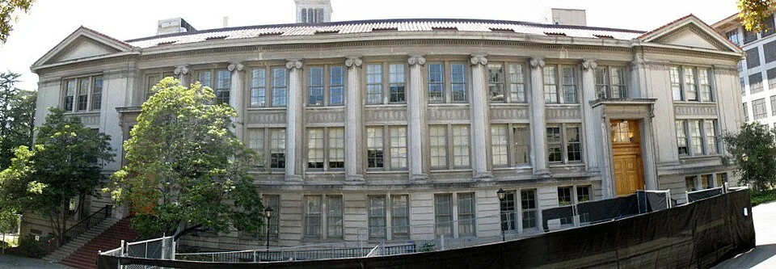
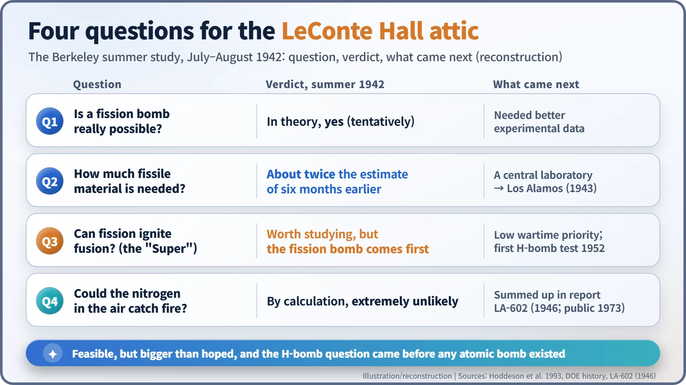
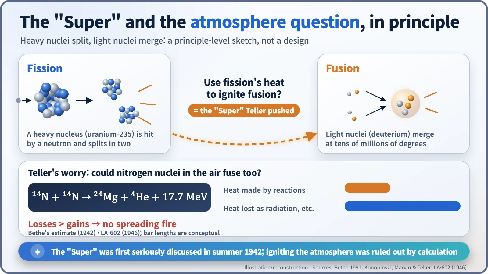
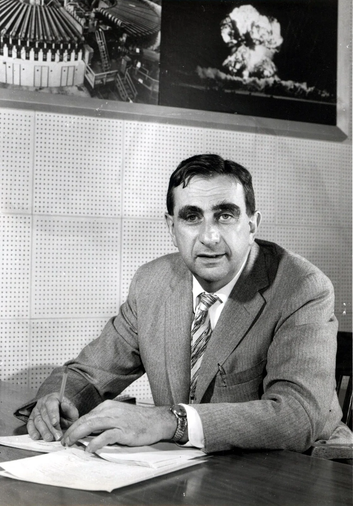

Nuclear History · 090
The Luminaries in the Attic — The 1942 Berkeley Summer Study and the "Super"
A handful of theorists in two top-floor rooms decided the bomb could work, then turned to an even bigger idea and an even darker question.
In July 1942, J. Robert Oppenheimer gathered a small group of top theorists in two top-floor rooms of LeConte Hall at Berkeley to ask whether an atomic bomb could really work. They concluded it could, though it would need about twice as much fissile material as earlier estimated. Along the way, Edward Teller raised two bigger questions: a fusion "Super" bomb, and whether a nuclear explosion could set the atmosphere on fire.
An answer four years late
"Whatever the temperature to which a section of the atmosphere may be heated, no self-propagating chain of nuclear reactions is likely to be started."
That is the conclusion of LA-602, a Los Alamos report dated 14 August 1946 under the alarming title "Ignition of the Atmosphere with Nuclear Bombs". The title sounds like science fiction. In fact the report was a late, formal answer to a question first asked four summers earlier, in a pair of rooms at the top of a university building in California. [1]
A resignation opens a door
In spring 1942, American work on an atomic bomb was scattered across several universities. The "fast-neutron" calculations, the physics of how much uranium a bomb would need and how it would behave as it exploded, had been led by Gregory Breit. On 18 May 1942 Breit quit, citing lax security. Arthur H. Compton, who oversaw the bomb research, handed the job to a Berkeley theorist: J. Robert Oppenheimer (1904–1967). [3]
Oppenheimer's answer was to gather the best theorists he could find in one place and go over bomb physics from the ground up.
Two dormer rooms at the top of LeConte Hall
The venue was LeConte Hall, the physics building at the University of California, Berkeley. From the second week of July 1942, a small group met in two dormer rooms on its top floor: Hans Bethe (1906–2005) of Cornell; the Hungarian-born Edward Teller (1908–2003); Robert Serber (1909–1997); Emil Konopinski (1911–1990); John H. Van Vleck; Felix Bloch; the young Stanley Frankel; and the senior Richard C. Tolman. Oppenheimer reportedly called them "our galaxy of luminaries". It was no idle boast: Bloch, Bethe and Van Vleck would each go on to win the Nobel Prize in Physics. [2]

First verdict: "Yes, but you'll need more"
The questions on the blackboard were simple to state. Would a bomb really work? If so, how much material would it take? The group worked through how neutrons spread through a lump of metal and how the material would move in the instant of an explosion, and they compared ways of bringing pieces together fast enough: firing a cylindrical "plug" into a sphere, for example, or a primitive form of squeezing the material inward, an early hint of "implosion" suggested by Tolman. [2]
Their verdict came in two parts. A fission bomb was possible in theory. But the amount of fissile material needed looked like roughly twice what had been estimated about six months earlier. The experimental numbers were still shaky, so the conclusion was tentative, yet the message was clear: a problem this hard could not be solved by letters and train trips between distant campuses. It needed one laboratory where everyone worked together. That idea led, the following spring, to Los Alamos in New Mexico. [4]

Teller's detour: the "Super"
Once the fission bomb seemed settled, at least on paper, Teller steered the talk toward something bigger. Building on an idea Enrico Fermi is said to have tossed out to him the previous year, he wanted to discuss "the Super": a bomb that would use the heat of an atomic explosion to set off nuclear fusion in deuterium, a heavy form of hydrogen. [3]
Fission releases energy when a heavy nucleus splits; fusion releases energy when light nuclei merge. The catch is that fusion needs temperatures of tens of millions of degrees. The Super's idea was to reach them with an atomic bomb. Teller proposed scheme after scheme, Bethe kept finding the holes, and in the end fusion was set aside. Any Super would need a working fission bomb first. Even so, the seed of the hydrogen bomb had been planted before a single atomic bomb existed. [5]
Could the sky catch fire?
During that discussion Teller raised a darker question. Could the heat of an explosion make nitrogen nuclei in the air fuse with one another? Two nitrogen-14 nuclei can, in principle, combine into magnesium-24 and helium-4, releasing 17.7 MeV. If that reaction kept spreading, might the whole atmosphere ignite?
Bethe ran the numbers and concluded it was "extremely unlikely". The key was the energy budget. Even if a few such reactions happened, far more heat would leak away as radiation than the reactions could produce, so no fire could spread. Think of tossing a match onto a pile of soaking-wet logs: it flares and dies. [3]

Oppenheimer still did not keep the worry to himself; he went to see Compton in person to report it. In a 1959 interview with the writer Pearl S. Buck, Compton recalled setting a rule: if "the chances were more than approximately three in a million", the project would have to stop. That figure is often retold as "a three-in-a-million chance of burning up the atmosphere". It was not a calculated probability, though. It was a stopping threshold, recalled seventeen years after the fact. [3]
The theorists concluded that, for practical purposes, the chance was negligible, and they kept checking the points where experimental data were thin. That work is what LA-602, by Konopinski, Cloyd Marvin and Teller, summed up after the war. The report itself added that "the complexity of the argument and the absence of satisfactory experimental foundations makes further work on the subject highly desirable." This was not a group shrugging off a known danger. It was a group that ruled the danger out by calculation and still kept asking. [1]

What the attic summer left behind
The summer study moved the atomic bomb from "is it possible?" to "how do we build it?", and it showed what Oppenheimer could do at the head of a room full of brilliant people. Teller's Super stayed a low priority through the war, then returned after it at the centre of the hydrogen-bomb debate. The questions asked in two attic rooms shaped much of the decade that followed. [5]